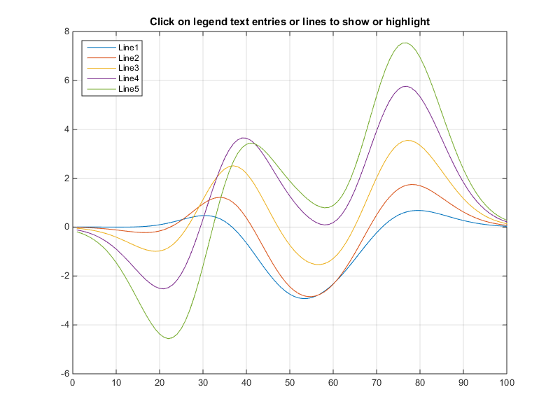
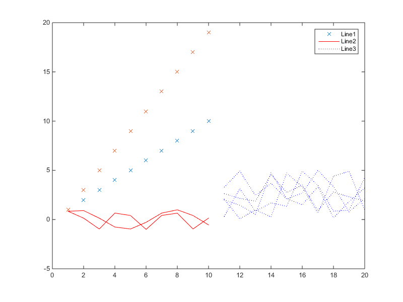
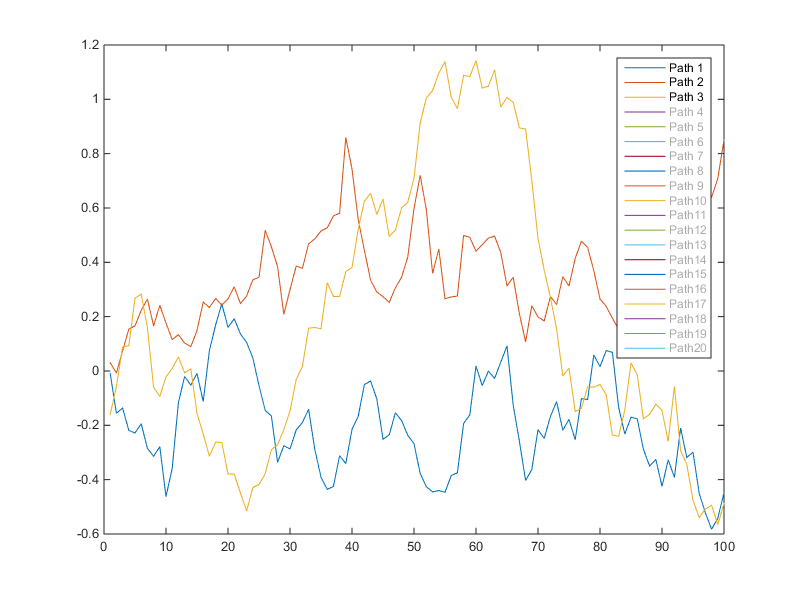
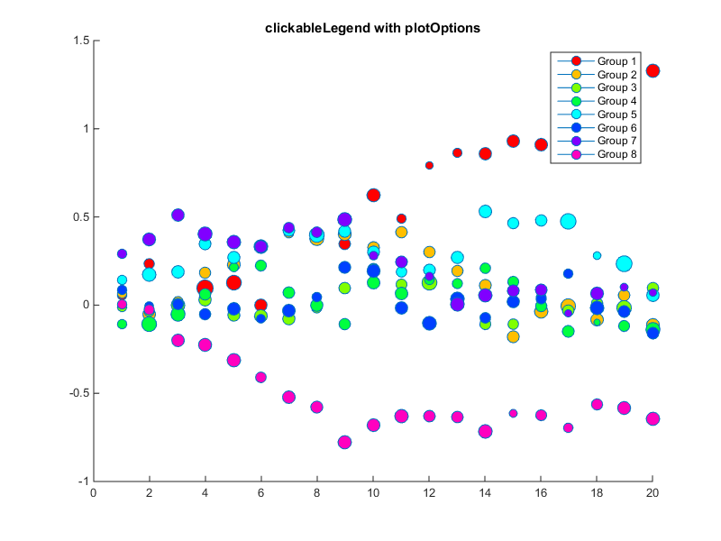

Examples of clickableLegend
This script demonstrates using the function clickableLegend to generate interactive legends that hide or highlight objects in the axes when clicked or when the corresponding legend item is clicked.
Contents
Simple clickableLegend
This plot contains a number of lines with a unique legend entry for each line. clickableLegend enables you to toggle the visibility of lines (show/hide) by clicking on the text in the legend. It also enables you to identify which plot object corresponds to which legend entry by making each line more prominent in the axes and legend when it is clicked.
clf z = peaks(100); plot(z(:,26:5:50)) grid on; axis manual; clickableLegend({'Line1','Line2','Line3','Line4','Line5'}, 'Location', 'NorthWest'); title('Click on legend text entries or lines to show or highlight')
Grouped legend
Very often data is grouped by certain variable with common characteristics. clickableLegend enables you to only create one legend entry per group and manage toggling behavior by group. In this example, clicking on either the legend text or the graphics object will highlight the entire group of graphics objects.
clf f = plot([1:10;1:2:20]','x'); hold on; g = plot(sin([1:10;1:2:20]'),'r-'); h = plot(11:20,rand(5,10)*5,'b:'); clickableLegend([f;g;h], {'Line1','Line2','Line3'},... 'groups', [1 1 2 2 3 3 3 3 3]);
Initial displayed lines
If you have a large number of lines being plotted, you can select a small subset to be visible when the legend is created
clf
z = cumsum(randn(100,20)*.1);
plot(z);
strs = strcat({'Path'},cellstr(int2str((1:size(z,2))')));
clickableLegend(strs, 'displayedLines', 1:3);
 Legend plot options
In some instances, one may wish to standardize the way the markers are drawn in the legend. By default the legend marker is taken from the first element within a group.
rng default z = cumsum(randn(20,8)*.1); s = randn(20,8)*1.5+10; col = hsv(8); clf; h = zeros(20,8); grp = zeros(size(h)); strs = cell(1,8); for i = 1:size(h,1) for j = 1:size(h,2) h(i,j) = line(i, z(i,j), 'LineStyle', '-', 'Marker', 'o', 'MarkerFaceColor', col(j,:), 'MarkerSize', s(i,j)); strs{j} = ['Group ' int2str(j)]; grp(i,j) = j; end end clickableLegend(h(:), strs, 'groups', grp(:)); title('clickableLegend without plotOptions');

Note that the marker sizes are all different in the legend. Use clickableLegend with the plotOptions parameter to make those consistent
figure rng default z = cumsum(randn(20,8)*.1); s = randn(20,8)*1.5+10; col = hsv(8); clf; h = zeros(20,8); grp = zeros(size(h)); strs = cell(1,8); for i = 1:size(h,1) for j = 1:size(h,2) h(i,j) = line(i, z(i,j), 'LineStyle', '-', 'Marker', 'o', 'MarkerFaceColor', col(j,:), 'MarkerSize', s(i,j)); strs{j} = ['Group ' int2str(j)]; grp(i,j) = j; end end clickableLegend(h(:), strs, 'groups', grp(:), 'plotOptions', {'MarkerSize', 8}); title('clickableLegend with plotOptions')